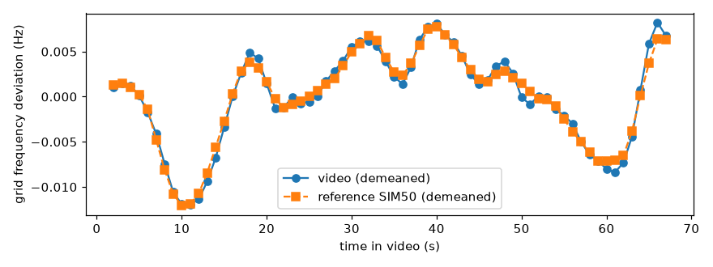
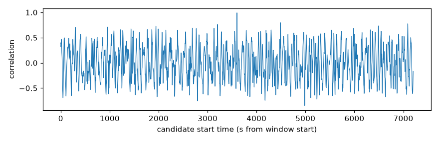
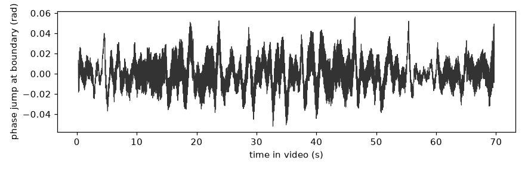
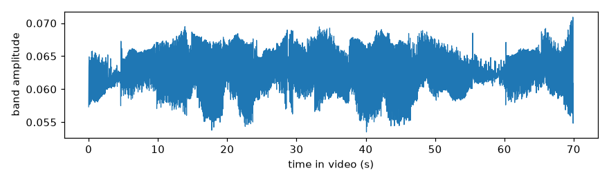

GRIDPRINT analysis report
Verdict
VERIFIED
A grid signal is present and matches the reference log at one time. No significant edit evidence was found.
Report state: FINAL
Summary
| Estimated recording start (UTC) | 2026-01-20T09:59:59.973488+00:00 ± 1.5 s |
|---|---|
| Grid zone | SIM50 |
| Reasons |
|
| Match | peak correlation 0.991, next peak 0.795, track length 69 s |
Key plots




Limitations
- GRIDPRINT reads the grid frequency from the flicker of mains-powered lights. It is not a deepfake classifier and it is not cryptographic proof.
- A missing signal is never evidence that a video is fake. Many phones hide the flicker ("anti-banding"), and daylight or battery lights do not flicker.
- A time estimate is possible only inside the time range of the reference log for the zone.
- Location output is limited to the grid zone. GRIDPRINT gives no finer location.
- Thresholds come from calibration data. Results outside the calibrated conditions carry more risk of error.
- A CONTRADICTED verdict needs approval by a human reviewer before the report is final.
Provenance
| File SHA-256 | b77ced2d949742114aa1c67988026396ef14c72cfd7221ff30663d595d7c7779 |
|---|---|
| Engine version | 0.1.0 |
| Config hash | 8f439372b865ee8e |
| Thresholds hash | 0161b96f77d3e925 |
| Job | aws4-capture-verified-041747 |
Appendix
Continuity events
None.
Quality metrics
| axis | rows+ |
|---|---|
| band_snr_db | 6.614609559814535 |
| bitrate | 475816 |
| bits_per_pixel | 0.2065173611111111 |
| camera_motion_px | 0.0332642155899567 |
| codec | h264 |
| dft_peak_hz | 100.02936157407733 |
| estimators_agree | True |
| foreground_fraction | 0.052797619047619045 |
| frames | 2100 |
| height | 240 |
| jitter_p50_ms | 3.3302427482340136e-07 |
| jitter_p95_ms | 3.3385298969790256e-07 |
| motion_level_px | 0.1115635689380337 |
| nominal_flicker_hz | 100.0 |
| opencv_frame_count | 2100 |
| phase_mean_flicker_hz | 100.02602150557438 |
| readout_s | 0.025 |
| readout_source | READOUT_FROM_SIDECAR |
| rotation_metadata_deg | 0 |
| segmentation | ok |
| static_fraction | 1.0 |
| timestamp_source | sensor |
| timing_assumption | sensor_timestamp_is_first_row_exposure_start |
| track_id | t1 |
| track_samples | 66 |
| transfer | bt709 |
| verdict_rule | S13.4 |
| width | 320 |
Stage timings (s)
| S1_ingest | 0.2958 |
|---|---|
| S2_linear | 2.1547 |
| S3_readout | 0.0 |
| S4_motion | 6.4506 |
| S5_segment | 0.9503 |
| S7_rowsignal | 1.3239 |
| S6_patches | 1.5129 |
| S8_phase | 0.7567 |
| S10_match | 0.7072 |
| S11_continuity | 0.0009 |